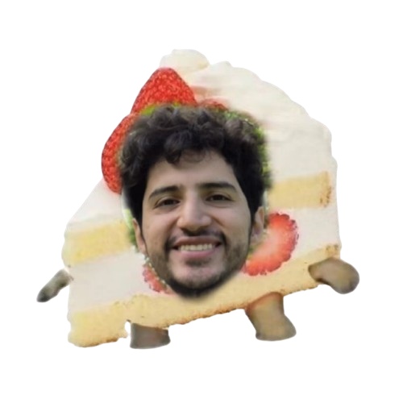

Lo primero que hay que tener clarísimo: un sueño no es un hecho. Es una simulación que arma el cerebro mientras duermimos y no tiene ninguna obligación de reflejar la realidad.

Mientras dormimos, sobre todo en esa fase donde soñamos más profundo, el cerebro se desconecta de toda lógica pero deja la parte de las emociones prendida a mil. Por eso los sueños se sienten tan intensos, mezclan de todo un poco, recuerdos, cosas del día, mieditos, cosas randoms, sin ningún orden. No es un mensaje secreto ni una señal de nada. Es solo ruido bonito (o feo) con forma de historia.
Por eso cuando Zashary se despertó todo serio porque soñó que yo le decía que ya no lo quería, lo primero que hice fue reírme un poquito (con mucho cariño). Porque,eso no pasó ni pasará. Fue su cabecita dormida inventando un drama sin permiso mío. Yo no dije eso, no lo pienso, ni lo voy a pensar despierta.
Un sueño feo no le gana a lo que siento de verdad, despierta, con los ojos abiertos y las ideas claras. Así que, ven acá, no pasa nada, fue solo un sueño, y yo sigo aquí queriéndote muchísimo, como siempre
Y hablando de quererlo muchísimo estando bien despierta...